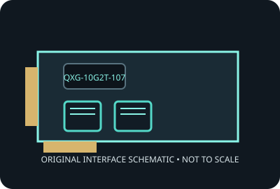

[ MODEL-SPECIFIC NETWORK HARDWARE ]
QNAP QXG-10G2T-107 10GbE Network Expansion Card
Dual-port 10GBASE-T PCIe adapter with NBASE-T fallback. Record applies to the exact SKU named here; verify the physical label and revision.

IDENTIFICATION: Product label: QXG-10G2T-107. Link rates are nominal negotiated signaling rates, not measured throughput.
Specifications and OS compatibility
| Catalog subcategory | Ethernet adapters |
|---|---|
| Exact product SKU | QXG-10G2T-107 |
| Controller | Two Marvell AQtion AQC107S Ethernet controllers (one per port); confirm controller markings on the board revision. |
| Bus, lane and port interface | PCI Express Gen 2.0 x4 add-in card; two RJ-45 (8P8C) copper ports. |
| Ports and media | 2 port(s); 10GBASE-T interface. |
| Nominal line rate (not measured) | Each port negotiates 10, 5, 2.5, 1 Gb/s or 100 Mb/s; up to 20 Gb/s aggregate nominal line rate across two independent links. |
| Operating systems and drivers | QNAP documents QTS/QuTS hero, Windows and Linux support with the applicable driver package. OS/kernel package versions and NAS qualification vary; use QNAP downloads for the exact host. |
| Compatibility notes | Requires an available PCIe x4 electrical link and two compatible Ethernet peers. Use Cat 6A cabling for full 100 m 10GbE reach; QNAP NAS compatibility is model/OS specific. A negotiated line rate is not application throughput. |
| Measured throughput | No physical specimen benchmark is claimed. A meaningful result must identify host, peer, link partner, media, driver/firmware, traffic pattern, test tool and duration. |
Model and revision notes
Requires an available PCIe x4 electrical link and two compatible Ethernet peers. Use Cat 6A cabling for full 100 m 10GbE reach; QNAP NAS compatibility is model/OS specific. A negotiated line rate is not application throughput.
Confirm exact card revision, device ID, transceiver/cable type, host firmware, bracket and driver build before installation. Use vendor qualification data for server/NAS deployment.
Preservation and measurement notes
Record card revision, controller marking and driver/firmware versions. Power down before installation; handle by edges and store in ESD shielding.
No measured throughput is represented by the nominal line rate. Record peer, media, negotiated rate, traffic pattern, test tool and duration for any future benchmark.
Manufacturer sources and documentation
- QNAP product pageManufacturer product identification and overview.
- QNAP hardware specificationsManufacturer specifications for the exact card.
- QNAP QXG-10G2T-107 datasheet (PDF)Manufacturer datasheet; confirm hardware revision and platform qualification.
Manufacturer documentation takes precedence for exact SKU, board revision and platform qualification; controller-family data alone does not establish card compatibility.